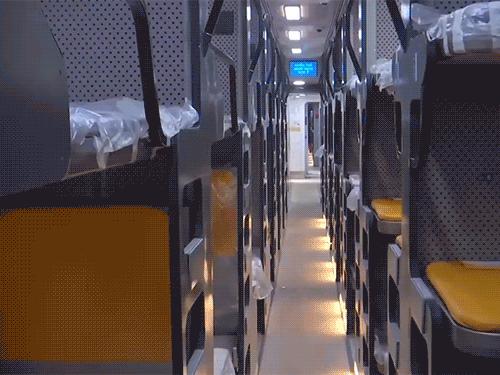

History

After Indian Independence, the Government of India wanted to reduce the import of rail coaches to cater to the increasing traffic of the Indian Railways. In the railway budget for 1949–50, then Minister of Transport and Railways, N. Gopalaswami Ayyangar announced the intention to establish a railway coach factory in India.[3] In 1949, a technical agreement was concluded with Swiss Cars and Elevator Manufacturing Corporation, a Zurich-based company for technical assistance and transfer of coach building technology.[4] A basic steel shell was designed as a prototype by the Swiss company which would form the basis of coaches to be manufactured in the new facility.[3][5] In 1951, the site for the factory was chosen at Perambur, a suburb of Madras and the construction began.[4] A further extended agreement was signed in 1953 for the Swiss company to supply tools and machines to set up the factory.[3] The Integral Coach Factory is one of the earliest production units and was constructed at a cost of ₹74.7 million (US$860,000).[6] The factory was inaugurated by then Prime Minister of India Jawaharlal Nehru,[7] and rolled out its first coach on 2 October 1955.[8] The furnishing division was inaugurated on 2 October 1962.
Manufacturing

The ICF consists of two main divisions, shell division and furnishing division.[9] The shell division consists of 14 individual units and manufactures the skeleton of the rail coach, where various parts that form the shell are fabricated and integrated to form a single structure that is placed on wheel sets.[9] The furnishing division consists of eight individual units and is responsible for interior furnishing, exterior painting, electrical equipment and other testing.[9] The factory had an installed capacity of 350 units per annum in 1955 with the production increasing to 1458 by 2013–14, 2277 by 2016–17 and reaching the highest at 4166 coaches in 2019–20.[2][10][11] In 2011, the air-conditioned train-sets manufactured by ICF for Kolkata Metro allegedly broke down causing disruption of services as the rakes were sent to Kolkata without conducting dry runs because the ICF did not have third-rail testing facilities.[12] As of early 2020s, the company manufactures over 4000 coaches each year and is the largest rail coach manufacturer in the world.[13][14] In June 2024, ICF rolled out its 75,000 coach, which was part of the 69th rake of Vande Bharat.
Products

ICF manufactures more than 170 varieties of coaches including IC coaches, LHB coaches, Metro coaches, EMUs, DMUs and MEMUs. The coaches manufactured based on original Swiss design were termed as ICF coaches which were manufactured from 1955 to 2018.[16] The ICF coaches were replaced by newer LHB coaches designed by Linke-Hofmann-Busch of Germany.[17] In the 1960s, ICF started developing EMUs for short-haul and local routes.[18][19] In 2017, ICF started developing a semi-high speed train-set designed to be fully air-conditioned, equipped with modern facilities and capable of reaching speeds of over 160 km/h (99 mph).[20] In 2018, the first prototype code-named "Train 18" was completed within 18 months after initiation and was built at a cost of ₹970 million (equivalent to ₹1.3 billion or US$15 million in 2023) with 80% indigenous components.[21] It was later re-named as Vande Bharat Express, the first of which was flagged off by the Prime Minister of India on 15 February 2019.
Exports

While the coach factory primarily manufactures rolling stock for Indian Railways, it also exports railway coaches to other countries. The first export was an order of 47 bogies to Thailand in 1967 and the factory has since exported 875 bogies and coaches to over 13 Afro-Asian countries including Angola, Bangladesh, Mozambique, Myanmar, Nepal, Nigeria, Philippines, Sri Lanka, Taiwan, Tanzania, Uganda, Vietnam, and Zambia.
Other Facilities

A training school, established in 1955 provides training to the personnel.[3] A Regional Railway Museum is situated in the factory premises which has a collection of nascent models of trains and models endemic to the Indian Railways. ICF maintains quarters of working staff and other associated facilities including hospitals and schools.[3] About 59.1 million units of electricity had been generated through the windmills installed by ICF in Tirunelveli district in 2011 which met 80 per cent of the plant's electrical energy requirements.